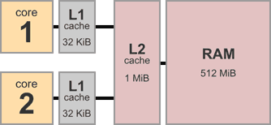

shared_mem
Пока будем организовывать себе разделяемую память по старинке: mmap(MAP_SHARED); fork().
Неожиданности на уровне ассемблера
Мы привыкли думать про компьютер как про машину фон Неймана: есть отдельные инструкции, которые выполняются в определённой последовательности, и результаты выполнения каждой “видны” всем последующим:
mov $3, x
mov x, %eax // очевидно, теперь eax == 3
Так мы всегда писали программы, так видели их в отладчике.
Можно было бы ожидать, что когда мы пишем многопоточную программу, то из инструкций отдельных потоков (перемежающихся в каком-то порядке) можно составить эквивалентную однопоточную:
CPU 1 CPU 2 Однопоточное исполнение
Sequential consistency
mov $3, x ----------------------------> mov $3, x
mov $4, y -------> mov $4, y
mov y, %eax --------------------------> mov y, %eax
mov x, %ecx ------> mov x, %ecx
Но оказывается, что на реальном процессоре может быть вот так:
// Thread 1 // Thread 2
// start with x == 0, y == 0
mov $1, x mov $2, y
mov y, %eax mov x, %ecx
// %eax == 0, %ecx == 0
Как ни перемежай эти инструкции, в однопоточной программе такой результат невозможен.
Дело в том, что мы для скорости добавляем в процессоры кэши:

Нашу любимую архитектуру x86 можно представить так (Total Store Order):

Возможно, один процессор записал в свой write buffer x=1 , другой y=2, но пока не записали это в общую память, а прочитали из общей памяти старые значения.
Тем не менее на x86 не может быть такого:
// start with x=0, y=0
// Thread 1 // Thread 2
x = 1 r1 = y
y = 1 r2 = x
// **r1 = 1, r2 = 0**
// более поздняя запись произошла,
// а более ранняя нет
Но такое может быть на архитектуре ARM:

Чтобы можно было писать программы, процессор гарантирует некоторую модель памяти: что может происходить, а что нет.
Названия: sequential consistency, TSO, strong/relaxed memory model.
Статья про модели памяти: https://research.swtch.com/hwmm
Документация Intel (см. раздел 8.2.3 Examples Illustrating the Memory-Ordering Principles):
https://www.intel.com/content/www/us/en/developer/articles/technical/intel-sdm.html (только через VPN)
RMW — read, modify, write
Счётчик:
lock incl x // из разных потоков
// -> load x, %r...; inc %r...; store %r..., x
mfence // full barrier
lfence // load fence
sfence // store fence
Неожиданности на уровне ЯВУ
(То есть Языка Высокого Уровня.)
Компилятор ничего не знает про разные потоки исполнения.
// Thread 1 // Thread 2
x = 1; while(done == 0) { /* loop */ }
done = 1; print(x);
Цикл может 1) выполняться бесконечно, 2) не выполняться совсем, 3) выполняться как ожидается.
Можно поиграться с разными вариантами:
Напечатано может быть 0, 1 или что-нибудь ещё.
Atomics
C: _Atomic.
Atomic vs volatile: https://godbolt.org/z/zT55bhzs8
Более уместно было бы название synchronizing atomics.
Как атомарные операции компилируются на разных платформах:
https://www.cl.cam.ac.uk/~pes20/cpp/cpp0xmappings.html
Thread 1 Thread 2
W(x, 1) // happens before SW(done)
SW(done, 1) --- SR(done) // happens before R(x)
R(x) // happens after SR(m)
// W(x, 1) → SW → SR → R(x)
↓ ↓
program order program order
mov $1, x mov done, %eax // 1
mov $1, done mov x, %ecx
Линус про _Atomic: Re: Memory corruption due to word sharing (”it's not the "state" that is accessed concurrently. It's the code.”).